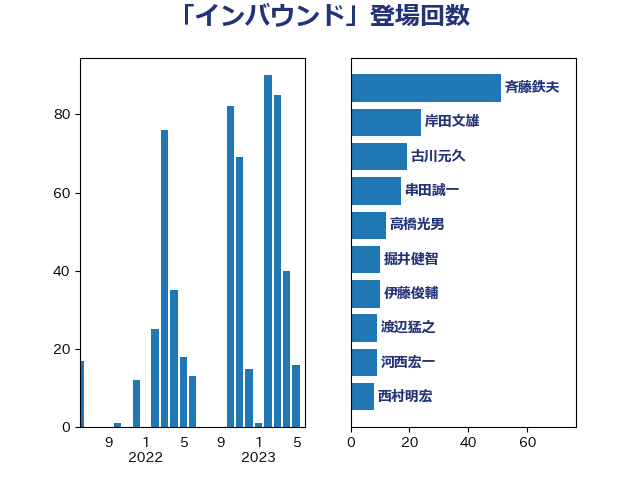

単語「インバウンド」

| 赤羽一嘉 | 公明党 | 22 回 |
| 斉藤鉄夫 | 公明党 | 16 回 |
| 渡辺猛之 | 自由民主党 | 9 回 |
| 河西宏一 | 公明党 | 7 回 |
| 泉田裕彦 | 自由民主党 | 7 回 |
| 長谷川岳 | 自由民主党 | 7 回 |
| 高橋千鶴子 | 日本共産党 | 7 回 |
| 菅義偉 | 自由民主党 | 6 回 |
| 青木愛 | 立憲民主党 | 6 回 |
| 上田清司 | 国民民主党 | 5 回 |
| 串田誠一 | 日本維新の会 | 5 回 |
| 古川元久 | 国民民主党 | 5 回 |
| 寺田学 | 立憲民主党 | 5 回 |
| 小宮山泰子 | 立憲民主党 | 5 回 |
| 岸田文雄 | 自由民主党 | 5 回 |
| 渡辺周 | 立憲民主党 | 5 回 |
| 須藤元気 | 無所属 | 5 回 |
| 高野光二郎 | 自由民主党 | 5 回 |
| 井上英孝 | 日本維新の会 | 4 回 |
| 今枝宗一郎 | 自由民主党 | 4 回 |
| 小泉進次郎 | 自由民主党 | 4 回 |
| 市村浩一郎 | 日本維新の会 | 4 回 |
| 杉本和巳 | 日本維新の会 | 4 回 |
| 森屋宏 | 自由民主党 | 4 回 |
| 石井苗子 | 日本維新の会 | 4 回 |
| 若宮健嗣 | 自由民主党 | 4 回 |
| 室井邦彦 | 日本維新の会 | 3 回 |
| 小熊慎司 | 立憲民主党 | 3 回 |
| 森まさこ | 自由民主党 | 3 回 |
| 森屋隆 | 立憲民主党 | 3 回 |
| 田村貴昭 | 日本共産党 | 3 回 |
| 萩生田光一 | 自由民主党 | 3 回 |
| 鈴木憲和 | 自由民主党 | 3 回 |
| 鳩山二郎 | 自由民主党 | 3 回 |
| 下村博文 | 自由民主党 | 2 回 |
| 中野英幸 | 自由民主党 | 2 回 |
| 井上貴博 | 自由民主党 | 2 回 |
| 伊佐進一 | 公明党 | 2 回 |
| 伊藤渉 | 公明党 | 2 回 |
| 伴野豊 | 立憲民主党 | 2 回 |
| 和田政宗 | 自由民主党 | 2 回 |
| 大塚耕平 | 国民民主党 | 2 回 |
| 大野泰正 | 自由民主党 | 2 回 |
| 小島敏文 | 自由民主党 | 2 回 |
| 小沼巧 | 立憲民主党 | 2 回 |
| 岩屋毅 | 自由民主党 | 2 回 |
| 岩本剛人 | 自由民主党 | 2 回 |
| 朝日健太郎 | 自由民主党 | 2 回 |
| 林芳正 | 自由民主党 | 2 回 |
| 武部新 | 自由民主党 | 2 回 |
| 江田憲司 | 立憲民主党 | 2 回 |
| 池下卓 | 日本維新の会 | 2 回 |
| 清水真人 | 自由民主党 | 2 回 |
| 片山大介 | 日本維新の会 | 2 回 |
| 竹内真二 | 公明党 | 2 回 |
| 蓮舫 | 立憲民主党 | 2 回 |
| 赤澤亮正 | 自由民主党 | 2 回 |
| 道下大樹 | 立憲民主党 | 2 回 |
| 野田佳彦 | 立憲民主党 | 2 回 |
| 青山繁晴 | 自由民主党 | 2 回 |
| 高橋光男 | 公明党 | 2 回 |
| たがや亮 | れいわ新選組 | 1 回 |
| 一谷勇一郎 | 日本維新の会 | 1 回 |
| 上川陽子 | 自由民主党 | 1 回 |
| 世耕弘成 | 自由民主党 | 1 回 |
| 中川正春 | 立憲民主党 | 1 回 |
| 伊藤俊輔 | 立憲民主党 | 1 回 |
| 伊藤孝恵 | 国民民主党 | 1 回 |
| 住吉寛紀 | 日本維新の会 | 1 回 |
| 前原誠司 | 国民民主党 | 1 回 |
| 務台俊介 | 自由民主党 | 1 回 |
| 安達澄 | 無所属 | 1 回 |
| 宮本周司 | 自由民主党 | 1 回 |
| 寺田静 | 無所属 | 1 回 |
| 小林鷹之 | 自由民主党 | 1 回 |
| 山下芳生 | 日本共産党 | 1 回 |
| 山口壯 | 自由民主党 | 1 回 |
| 山岸一生 | 立憲民主党 | 1 回 |
| 山本剛正 | 日本維新の会 | 1 回 |
| 東国幹 | 自由民主党 | 1 回 |
| 松野博一 | 自由民主党 | 1 回 |
| 枝野幸男 | 立憲民主党 | 1 回 |
| 柳本顕 | 自由民主党 | 1 回 |
| 森山浩行 | 立憲民主党 | 1 回 |
| 森田俊和 | 立憲民主党 | 1 回 |
| 榛葉賀津也 | 国民民主党 | 1 回 |
| 横山信一 | 公明党 | 1 回 |
| 浜口誠 | 国民民主党 | 1 回 |
| 深澤陽一 | 自由民主党 | 1 回 |
| 清水貴之 | 日本維新の会 | 1 回 |
| 熊野正士 | 公明党 | 1 回 |
| 玉木雄一郎 | 国民民主党 | 1 回 |
| 田村憲久 | 自由民主党 | 1 回 |
| 田村智子 | 日本共産党 | 1 回 |
| 石川香織 | 立憲民主党 | 1 回 |
| 稲富修二 | 立憲民主党 | 1 回 |
| 稲津久 | 公明党 | 1 回 |
| 竹谷とし子 | 公明党 | 1 回 |
| 紙智子 | 日本共産党 | 1 回 |
| 美延映夫 | 日本維新の会 | 1 回 |
| 羽田次郎 | 立憲民主党 | 1 回 |
| 舩後靖彦 | れいわ新選組 | 1 回 |
| 茂木敏充 | 自由民主党 | 1 回 |
| 荒井優 | 立憲民主党 | 1 回 |
| 葉梨康弘 | 自由民主党 | 1 回 |
| 藤岡隆雄 | 立憲民主党 | 1 回 |
| 赤嶺政賢 | 日本共産党 | 1 回 |
| 足立敏之 | 自由民主党 | 1 回 |
| 里見隆治 | 公明党 | 1 回 |
| 野上浩太郎 | 自由民主党 | 1 回 |
| 野田国義 | 立憲民主党 | 1 回 |
| 野田聖子 | 自由民主党 | 1 回 |
| 青柳仁士 | 日本維新の会 | 1 回 |